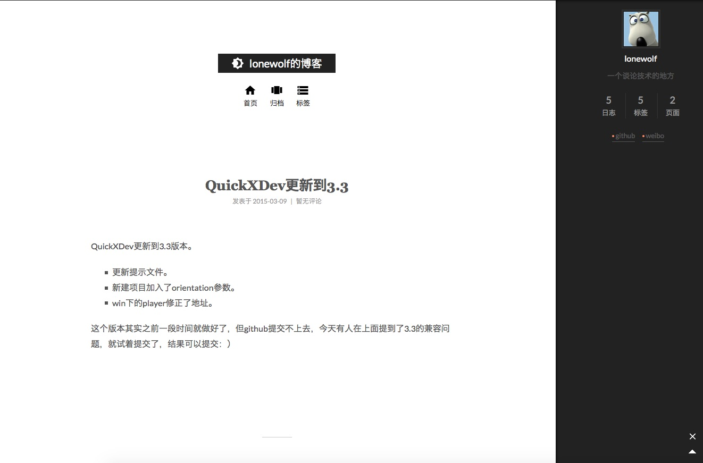
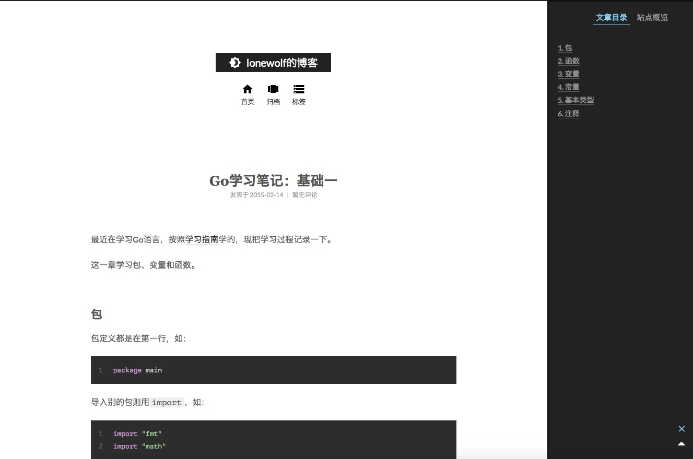
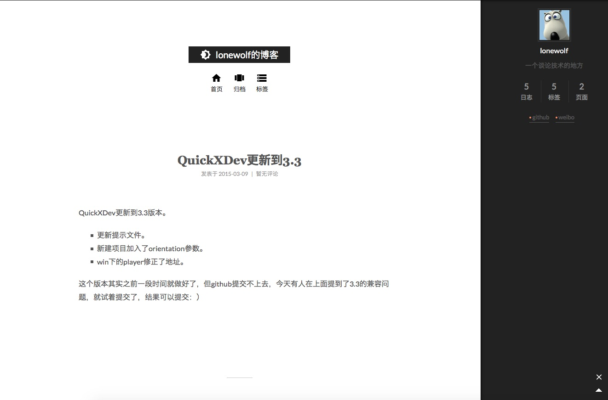
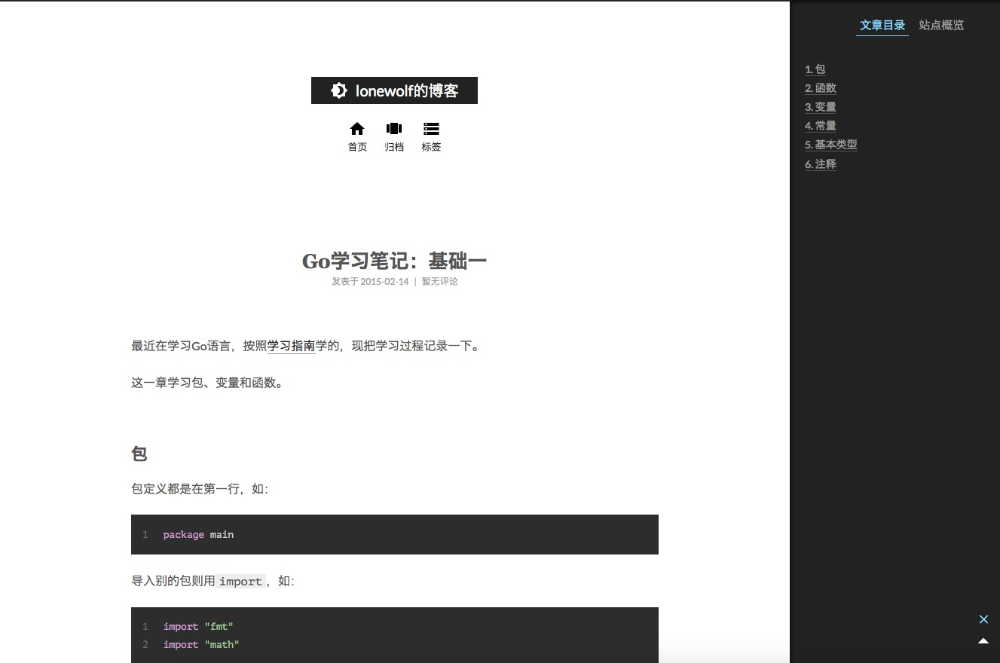

博客引擎迁移到hexo
原链接地址：http://lonewolf.me/content/2015/03/14/migrate-to-hexo.html
原创博客，转载请注明。
之前使用的是jekyll，现在改到了hexo，也重新选择了新主题，顺便添加了多说评论系统。  
原链接地址：http://lonewolf.me/content/2015/03/14/migrate-to-hexo.html
原创博客，转载请注明。
之前使用的是jekyll，现在改到了hexo，也重新选择了新主题，顺便添加了多说评论系统。  
原链接地址：http://lonewolf.me/content/2015/03/09/QuickXDev-ver3.3.html
原创博客，转载请注明。
QuickXDev更新到3.3版本。
这个版本其实之前一段时间就做好了，但github提交不上去，今天有人在上面提到了3.3的兼容问题，就试着提交了，结果可以提交：）
原链接地址：http://lonewolf.me/content/2015/02/27/new-domain.html
原创博客，转载请注明。
今天在万网买了个新域名，哈哈。
以后我的空间可以直接访问这个 http://lonewolf.name。
原链接地址：http://lonewolf.me/content/2015/02/14/go-study-part1.html
原创博客，转载请注明。
最近在学习Go语言，按照学习指南学的，现把学习过程记录一下。
这一章学习包、变量和函数。
包定义都是在第一行，如：
package main
导入别的包则用import，如：
import "fmt"
import "math"
也可以这样：
import (
"fmt"
"math/rand"
)
如果你引入了一个包，但没有使用它，是没法编译通过的，出错信息如下：
imported and not used: "math"
因为Go语言是静态编译，引入没有使用的包会增大最终执行文件的体积，所以Go强制这样做。
Go语言提供了很多的标准包，具体可以看看Go库文档（中文）。
>Go语言编译运行时（go run xxx.go），该文件里必须有main包和main函数才能运行。
>
>Go语言语句结尾都没有分号;。
原链接地址：http://lonewolf.me/content/2015/02/08/winxin-jssdk-src.html
原创博客，转载请注明。
今天把一个html5游戏的微信分享功能从第三方库切换到官方库了，官方微信JSSDK。 这其中碰到了一些问题，记录一下（服务端环境为PHP）：
Warning: file_get_contents(https://graph.qq.com/user/xxxxx) [function.file-get-contents]: failed to open stream: No error in /xxx/php.php on line 2
遇到这样的错误的，是因为没有开启openssl功能，可以在php.ini中把 extension=php_openssl.dll之前的;去掉，保存并重启（最好重启服务器）
> 注意：php.ini的位置是在phpinfo中找的。
原博客地址为：http://www.pchou.info/open-source/2014/01/18/52da47204d4cb.html 本人（lonewolf）只是把内容整理成markdown格式，并发布出PDF文档。
January 18th, 2014
本文是PLY (Python Lex-Yacc)的中文翻译版。转载请注明出处。
如果你从事编译器或解析器的开发工作，你可能对lex和yacc不会陌生，PLY是David Beazley实现的基于Python的lex和yacc。作者最著名的成就可能是其撰写的Python Cookbook, 3rd Edition。我因为偶然的原因接触了PLY，觉得是个好东西，但是似乎国内没有相关的资料。于是萌生了翻译的想法，虽然内容不算多，但是由于能力有限，很多概念不了解，还专门补习了编译原理，这对我有很大帮助。为了完成翻译，经过初译，复审，排版等，花费我很多时间，最终还是坚持下来了，希望对需要的人有所帮助。另外，第一次大规模翻译英文，由于水平有限，如果错误或者不妥的地方还请指正，非常感谢。
| 英文 | 翻译 |
|---|---|
| token | 标记 |
| context free grammar | 上下文无关文法 |
| syntax directed translation | 语法制导的翻译 |
| ambiguity | 二义 |
| terminals | 终结符 |
| non-terminals | 非终结符 |
| documentation string | 文档字符串（python中的_docstring_） |
| shift-reduce | 移进-归约 |
| Empty Productions | 空产生式 |
| Panic mode recovery | 悲观恢复模式 |